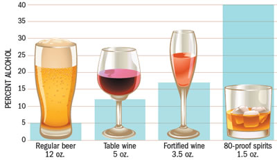

Lifestyle risk factors such as diet and exercise are part of controllable risk factors. Lifestyle risk factors are habits or behaviors people choose to engage in.
If changed, they can directly affect some medical risk factors by improving them.
A healthy diet can help you reduce the risk of chronic diseases, improve your overall health, and help you reach or maintain a healthy weight.
Eating healthy includes making informed decisions about food choices and balancing your calories.
The latest guidelines from Dietary Recommendations for Americans 2010 include the following:
- Moderate Activity 150 minutes of moderate-intensity activity per week (brisk walking, water aerobics, bicycling) and 2 or more days a week of weight training exercises.
- Vigorous Activity Or 75 minutes of vigorous-intensity activity per week (jogging, running, swimming laps) and 2 or more days a week of weight training exercises.
- Break it up If you can't fit a 30-minute activity in one time, break it up into 10-minute segments. Remember that all physical activity counts.
- Make physical activity fun Walk or bike with a friend, take a dance class, and try different times of the day.
Regular physical activity will improve your overall health and fitness, and reduce your risk for chronic diseases.
Smoking doubles the risk of stroke when compared to a nonsmoker.
Smoking increases clot formation, thickens blood, and increases the amount of plaque buildup in the arteries.
If you smoke, try as hard as possible to stop.
Ask your doctor about quit-smoking aids like nicotine patches, counseling, and programs that are available to you.
Quitting smoking can be difficult, so don't give up if you are not successful the first time you try.

Alcohol use has been linked to stroke in many studies.
Drinking too much alcohol can increase blood pressure and the risk of stroke.
Aim to drink in moderation - no more than two drinks a day for men and one drink a day for women.
One drink is equal to:
- 12 ounces of beer
- 5 ounces of wine(1 glass)
- 1.25 to 1.5 ounces of liquor